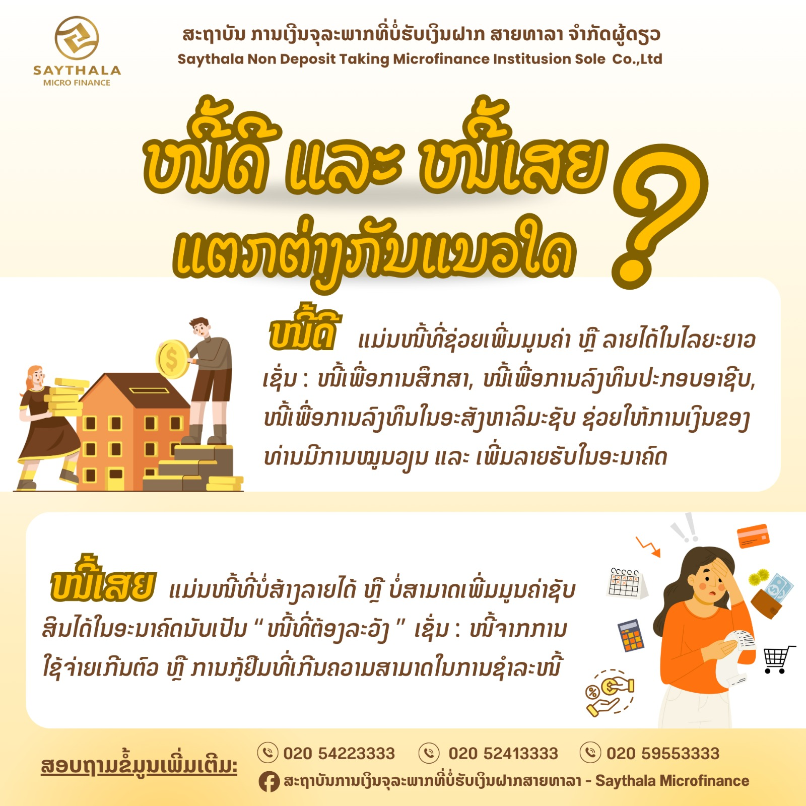

ກູ້ຢືມຢ່າງມີຄວາມຮັບຜິດຊອບ: ວິທີປະເມີນຄວາມສາມາດໃນການຊຳລະໜີ້ທີ່ແທ້ຈິງ

ການກູ້ຢືມເງິນບໍ່ແມ່ນເລື່ອງໜ້າກັງວົນ ຫາກເງິນກູ້ນັ້ນນຳໄປໃຊ້ເພື່ອສ້າງລາຍໄດ້ ຕໍ່ຍອດກິດຈະການ ຫຼື ຮອງຮັບກັບຈັງຫວະສຳຄັນໃນຊີວິດຢ່າງມີແບບແຜນ ແຕ່ໃນທາງກົງກັນຂ້າມ ການຕັດສິນໃຈກູ້ຢືມໂດຍປາດສະຈາກການປະເມີນກະແສເງິນສົດຢ່າງຮອບຄອບ ອາດປ່ຽນເປັນສົ່ງທີ່ເຮັດໃຫ້ເສຍໂອກາດ ແລະ ກາຍເປັນພາລະກົດດັນໄລຍະຍາວ ກະທົບກັບຄວາມໝັ້ນຄົງຂອງຄອບຄົວ ແລະ ທຸລະກິດ
1. ຄຳນວນສັດສ່ວນພາລະໜີ້ຕໍ່ລາຍໄດ້ (Debt Service Ratio - DSR)
ກ່ອນຍື່ນຂໍສິນເຊື່ອຈາກສະຖາບັນການເງິນໃດໆ ສູດຄຳນວນທີ່ສຳຄັນທີ່ສຸດທີ່ຜູ້ປະກອບການ ແລະ ບຸກຄົນທົ່ວໄປຕ້ອງຮູ້ ຄືສູດວັດອັດຕາສ່ວນຄວາມສາມາດໃນການແບກຮັບໜີ້ (DSR) ເຊິ່ງຄຳນວນຈາກ:
2. ແຍກໃຫ້ອອກລະຫວ່າງ "ໜີ້ສ້າງລາຍໄດ້" ກັບ "ໜີ້ສິ້ນເປືອງ"
ເງິນກູ້ຈະມີຄຸນຄ່າສູງສຸດ ເມື່ອກ້ອນເງິນນັ້ນສາມາດແປງເປັນຜົນຕອບແທນທີ່ສູງກວ່າຕົ້ນທຶນດອກເບ້ຍຈ່າຍ ໂປຣດພິຈາລະນາວັດຖຸປະສົງກ່ອນຕັດສິນໃຈສະເໝີ:
ໜີ້ສ້າງລາຍໄດ້ (Productive Debt)
ໜີ້ທີ່ຊ່ວຍເພີ່ມປະສິດທິພາບການເຮັດວຽກ ຂະຫຍາຍກຳລັງການຜະລິດ ຫຼື ເພີ່ມຜົນກຳໄລເຂົ້າສູ່ທຸລະກິດ
- check_circle ຊື້ເຄື່ອງຈັກ ອຸປະກອນແປຮູບ ຫຼື ຍານພາຫະນະສົ່ງຂອງ
- check_circle ຊື້ສະຕັອກສິນຄ້າໃນລາຄາຂາຍສົ່ງ ເພື່ອນຳມາຈຳໜ່າຍເກງກຳໄລ
- check_circle ປຸ໋ຍ ພັນພືດ ຫຼື ອຸປະກອນພັດທະນາຜົນຜະລິດກະສິກຳ
ໜີ້ສິ້ນເປືອງ (Unproductive Debt)
ໜີ້ທີ່ສ້າງຄ່າໃຊ້ຈ່າຍຝ່າຍດຽວ ບໍ່ກໍ່ໃຫ້ເກີດກະແສເງິນສົດກັບຄືນມາ ແລະ ມີມູນຄ່າຫຼຸດລົງຢ່າງວ່ອງໄວ
- cancel ການຊື້ສິນຄ້າແຟຊັ່ນ ຫຼື ອຸປະກອນທີ່ເກີນຄວາມຈຳເປັນຮີບດ່ວນ
- cancel ງານລ້ຽງສັງສັນ ຫຼື ຄ່າໃຊ້ຈ່າຍໃນການເຂົ້າສັງຄົມເກີນຕົວ
- cancel ການກູ້ຢືມເງິນກ້ອນໃໝ່ ເພື່ອນຳມາຈ່າຍດອກເບ້ຍເງິນກູ້ນອກລະບົບ
3. ສັນຍານເຕືອນໄພ ແລະ ຂໍ້ຄວນລະວັງກ່ອນເຊັນສັນຍາ (Red Flags)
ໃນຖານະຜູ້ກູ້ ທ່ານມີສິດທິເຕັມທີ່ໃນການຮັບຊາບຂໍ້ມູນທີ່ຖືກຕ້ອງ ໂປ່ງໃສ ແລະ ເປັນທຳ ກວດເຊັກລາຍການເຫຼົ່ານີ້ທຸກຄັ້ງກ່ອນຕັດສິນໃຈລົງລາຍເຊັນ:
ສອບຖາມອັດຕາດອກເບ້ຍແບບຫຼຸດຕົ້ນຫຼຸດດອກ ຫຼື ອັດຕາດອກເບ້ຍທີ່ແທ້ຈິງສະເໝີ ເພື່ອບໍ່ໃຫ້ເຂົ້າໃຈຜິດຈາກຕົວເລກອັດຕາຄົງທີ່ລາຍເດືອນ (Flat Rate)
ຫາກທ່ານເຮັດກະສິກຳ ຫຼື ຮັບເງິນເປັນງວດ ໃຫ້ເລືອກຮອບການຜ່ອນຊຳລະທີ່ກົງກັບລະດູການເກັບກ່ຽວ ຫຼື ຮອບເງິນເຂົ້າ ເພື່ອຫຼີກລ່ຽງການຜິດນັດຊຳລະ
ສະຖາບັນການເງິນທີ່ໄດ້ມາດຕະຖານເຊັ່ນ Saythala ຈະແຈ້ງລາຍລະອຽດຄ່າດຳເນີນການ ຕາຕະລາງຕັດເງິນຕົ້ນ-ດອກເບ້ຍຢ່າງໂປ່ງໃສ ໂດຍບໍ່ມີການຮຽກເກັບເງິນເຕີມ
ແມ່ນວ່າຈະອະນຸມັດໄວ ແຕ່ດອກເບ້ຍທົບລາຍວັນ ແລະ ການທວງຖາມທີ່ບໍ່ເປັນທຳ ຈະທຳລາຍສະຖຽນລະພາບທາງການເງິນຂອງຄອບຄົວຢ່າງຮ້າຍແຮງ
ຕ້ອງການທີ່ປຶກສາປະເມີນວົງເງິນກູ້?
ເຈົ້າໜ້າທີ່ສິນເຊື່ອ ສະຖາບັນການເງິນທີບໍ່ຮັບຝາກ ສາຍທາາລາ ພ້ອມຊ່ວຍວິເຄາະກະແສເງິນສົດ ແລະ ຈັດຕາຕະລາງຜ່ອນຊຳລະທີ່ເໝາະສົມກັບທ່ານ ໂດຍບໍ່ມີຄ່າໃຊ້ຈ່າຍ
ບົດຄວາມທີ່ທ່ານອາດສົນໃຈ
ເບິ່ງຄັງຄວາມຮູ້ທັງໝົດ arrow_forwardບັນຊີ 101: ເປັນຫຍັງຕ້ອງແຍກກະເປົາເງິນສ່ວນຕົວອອກຈາກເງິນທຸລະກິດ?
ເຕັກນິກການເຮັດບັນຊີລາຍຮັບລາຍຈ່າຍສະບັບເຂົ້າໃຈງ່າຍ ປ້ອງກັນບັນຫາກະແສເງິນສົດຕິດຂັດ ແລະ ເຫັນຜົນກຳໄລສຸດທິຂອງຮ້ານຄ້າໄດ້ຢ່າງຊັດເຈນ
ໝູນເງິນບໍ່ທັນເຮັດແນວໃດ? 3 ຂັ້ນຕອນຈັດການໜີ້ເມື່ອສະດຸດ
ແນວທາງການເຈລະຈາກັບເຈົ້າໜີ້ຢ່າງຖືກວິທີ ການປັບໂຄງສ້າງງວດຜ່ອນ ແລະ ການວາງແຜນຫຼຸດລາຍຈ່າຍທີ່ບໍ່ຈຳເປັນໃນຍາມສຸກເສີນ